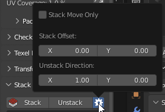

Stack
Panel

Stack
Collect Similar Islands on Stacks.
Preferences

Move Only
Don’t fit Islands. Just move to the same position.
Unstack Direction
Direction where the island will be shifted.
Unstack
Shift Islands from Stacks in given direction.
Stack Mode
Mode for Stacking.
Display Stacks 
Display of stacks.
Select Stacks 
Select stacks.
Stack Display Mode
Options

-
Similar (Static)
Display all Similar Islands.
-
Selected
Display Similar Islands by Selected.
-
Stacked
Display Stacked Islands.
Options

-
Stacked Color
Color for displaying Stacked Islands.
-
Only UV Area
Display Stacks only in UV area
-
Primaries
Primary Islands. Without Replicated Islands.
-
Replicas
Islands that can be Stacked. Without Primary Islands.
-
Singles
Islands that don’t have Similar Islands.
Copy
Copy parameters of selected Islands/Faces and save them.
Paste
Paste the parameters saved earlier to selected Islands/Faces.
Manual Stack
Panel

Area Matching 
Set strict requirements to Islands Area Matching when Stacking. Disable this option if the Islands have a slightly different Area.
Move Only 
Don’t fit Islands. Just move to the same position.
Add
Add new Stack.
Delete 
Delete selected Stack.
Add Islands 
Append selected Islands to the active Stack.
Select Islands
Select Islands in the Stack
Analyze Stack 
Analyze Islands Similarities in the Stack. You can find details in the Zen UV Manual Stack Analyze document in the Text Editor.
Remove All 
Remove all Manual Stacks from selected Objects.
Stack
Collect Islands on Manual Stacks.
Unstack
Shift Islands from Manual Stacks in given direction.
Stack Mode
Mode for Stacking.
Display Manual Stacks
Display Manual Stacks (Static)